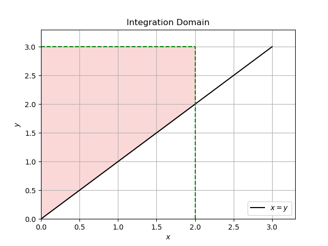
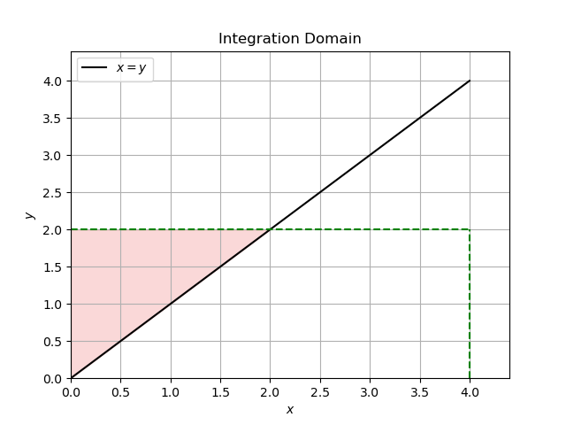
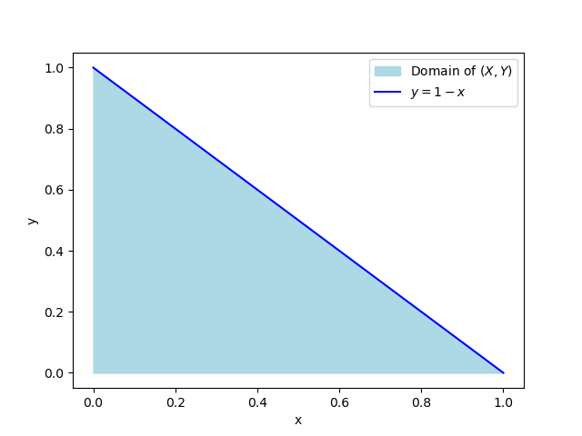
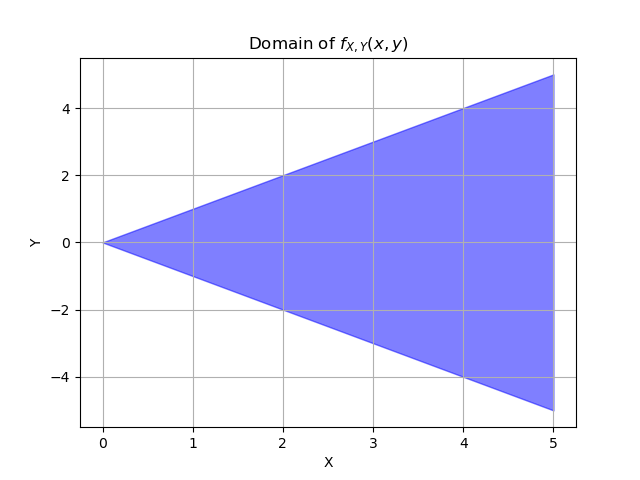
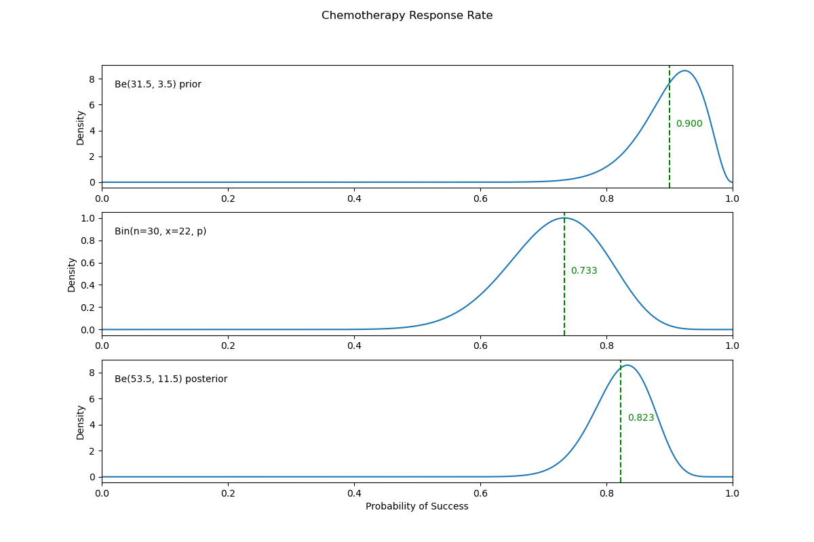

Supplementary Exercises 4.3#
Warning
This page contains solutions! We recommend attempting each problem before peeking.
1. Expectation and Variance#
Find \(E(X)\) and \(\text{Var}(X)\) if \(X\) has a density:
\(f(x) = 3x^2\), \(0 \le x \le 1\);
\(f(x) = \sin(x)\), \(0 \le x \le \pi/2\).
Solution
\(E(X) = \frac{3}{4}\), \(E(X^k) = \frac{3}{3+k}\), \(\text{Var}(X) = \frac{3}{80}\)
\(E(X) = 1\), \(E(X^2) = \pi - 2\), \(\text{Var}(X) = \pi - 3\)
2. Uniform on Unit Circle#
Let bivariate random variable \((X, Y)\) have a density
Find \(f_{Y|X}(y | x)\).
What is the conditional density \(f(y | x)\) for \(x = 0\)?
Solution
We have \( f(x, y) = \frac{1}{\pi} \) for \( x^2 + y^2 \le 1 \). We know that \( f(y|x) = \frac{f(x,y)}{f_X(x)} \), so we need to figure out \( f_X(x) = \int_{-\sqrt{1 - x^2}}^{\sqrt{1 - x^2}} f(x, y) \, dy \). Since we know \( x^2 + y^2 \le 1 \), the bounds for integration will occur on the unit circle. Rearranging and solving for \( y \), we find two solutions of \( y = \sqrt{1 - x^2} \) and \( y = -\sqrt{1 - x^2} \). We can then integrate:
Logically, the domain for this half-circle is \(-1 \le x \le 1\) but I would still verify that
to make sure.
3. Fungi Spores#
Fungi spores are elliptical in shape with minor and major axes used to describe their size. Let \(X\) and \(Y\) denote lengths of the minor and major axes (in micrometers):
Find:
joint distribution \(f_{(X,Y)}(x, y)\);
\(P(Y \leq 2 | X = 1)\);
\(E(Y | X = 1)\);
constant \(C\), such that \(P(Y \leq c) = 0.5\);
Are \(X\) and \(Y\) independent?
Solution
Since \( f(y|x) = \frac{f(x,y)}{f_X(x)} \), we have \( f(x, y) = f(y|x) \cdot f_X(x) = e^{-y} \).
We use the given \( Y | X \) equation with \( X = 1 \). We have
\( E(Y | X = 1) = \int_{1}^{\infty} y e^{-(y-1)} \, dy = 2 \).
We need to find the marginal distribution of \( Y \) by integrating out \( X \) from the joint likelihood from part (a). Once we have that, we can find the desired constant by integration/numerical solvers. We do this in two parts:
First, find \( f_Y(y) \) from \( f(x, y) = e^{-y} \) by integrating out the \( x \) variable over its region of definition. Since we have the relation \( x \le y \), we know that \( x \) can range from 0 to \( y \). We then construct the integral:
Then, we would like to match this to a known distribution if possible. We know that a Gamma distribution has the pdf of \( f(y | a, b) = \frac{b^a}{\Gamma(a)} y^{a-1} e^{-by} \). We can ignore the constant terms for now and just state \( f(y | a, b) \propto y^{a-1} e^{-by} \). We can match this to \( f_Y(y) = y e^{-y} \) by setting \( a = 2 \) and \( b = 1 \). Finally, to find the median value, it is the value of \( c \) that solves
For independence to be the case, we would have to be able to separate out the joint pdf \( f(x, y) \) into two separate functions \( f_X(x) \) and \( f_Y(y) \), i.e., \( f(x, y) = f_X(x) f_Y(y) \). Pay special attention to the region of definition for the functions. If you can do this, \( X \) and \( Y \) are independent.
4. Joint, Marginals and Conditionals #1#
Let random variables \(X\) and \(Y\) have joint density:
Find:
marginal densities \(f_X(x)\) and \(f_Y(y)\);
conditional densities of \(X\) given \(Y = y\), \(f_{X|Y}(x | y)\), and of \(Y\) given \(X = x\), \(f_{Y|X}(y|x)\);
the CDF of \((X, Y)\), \(F_{(X,Y)}(x, y) = P(X \le x, Y \le y)\).
Solution
It is useful to draw the support (domain) of the joint density. This is an unbounded region in the first quadrant of the \(xy\) plane above the line \(y = x\). There \(x \in [0, y]\) for \(y \ge 0\), or equivalently, \(y \in [x, \infty)\), for \(x \ge 0\).
From \( f_X(x) = \int_x^\infty f_{X,Y}(x, y) \, dy \) we find \( X \sim \text{Exp}(\lambda) \).
From \( f_Y(y) = \int_0^y f_{X,Y}(x, y) \, dx \) we find \( Y \sim \text{Ga}(2, \lambda) \).\( X | Y = y \sim U(0, y) \)
\( Y | X = x \sim \lambda e^{-\lambda(y-x)}, \, y \ge x \).
where the domain of integration \(D\) depends on whether \(x \le y\) or not.
If \(x \le y\) then the domain of integration of \( f(u, v) = \lambda^2 e^{-\lambda v} \) is:

If \(x > y\) then the domain is as follows:

For \(x \le y\), we have
For \(x > y\):
So after integration, our joint CDF is:
Show code cell content
import matplotlib.pyplot as plt
import numpy as np
from myst_nb import glue
x = 2
y = 3
fig, ax = plt.subplots()
# region to fill
ax.fill_between([0, x], [0, x], y, color="lightcoral", alpha=0.3)
# x = y
x_vals = np.linspace(0, max(x, y), 400)
y_vals = x_vals
ax.plot(x_vals, y_vals, label="$x = y$", color="black")
# domain boundaries
ax.plot([x, x], [0, y], "g--")
ax.plot([0, x], [y, y], "g--")
ax.set_xlim(0, max(x, y) * 1.1)
ax.set_ylim(0, max(x, y) * 1.1)
ax.set_xlabel("$x$")
ax.set_ylabel("$y$")
ax.set_title("Integration Domain")
ax.legend()
plt.grid(True)
plt.savefig("../images/q4_plot1.png")
Show code cell content
x = 4
y = 2
fig, ax = plt.subplots()
# region to fill
ax.fill_between([0, y], [0, y], y, color="lightcoral", alpha=0.3)
# x = y
x_vals = np.linspace(0, max(x, y), 400)
y_vals = x_vals
ax.plot(x_vals, y_vals, label="$x = y$", color="black")
# domain boundaries
ax.plot([x, x], [0, y], "g--")
ax.plot([0, x], [y, y], "g--")
ax.set_xlim(0, max(x, y) * 1.1)
ax.set_ylim(0, max(x, y) * 1.1)
ax.set_xlabel("$x$")
ax.set_ylabel("$y$")
ax.set_title("Integration Domain")
ax.legend()
plt.grid(True)
plt.savefig("../images/q4_plot2.png")
5. Joint, Marginals and Conditionals #2#
Let random variables \(X\) and \(Y\) have joint density $\( f_{(X,Y)}(x, y) = Cxy^2, \quad x \ge 0, \quad y \ge 0, \quad x + y \le 1. \)$
Show that $\( C = 60, \quad f_X(x) = 20x(1 - x)^3, \quad 0 \le x \le 1 \)\( and \)\( f_{Y|X}(y | x) = 3y^2(1-x)^3, \quad 0 \le y \le 1 - x. \)$
Find \(f_Y(y)\) and \(f_{X|Y}(x | y)\).
Solution
Show that $\( C = 60, \quad f_X(x) = 20x(1 - x)^3, \quad 0 \le x \le 1 \)\( and \)\( f_{Y|X}(y | x) = 3y^2(1-x)^3, \quad 0 \le y \le 1 - x. \)$
First, plotting really does help me get an idea of what’s going on.

To show that \(C=60\), we make use of one of the properties of PDFs, which is that they must integrate to 1. This is a joint PDF, so we need to integrate over both of the random variables, set that equal to 1, and solve for \(C\).
The limits here are from the problem description. You could also do it this way:
Now let’s find \(f_X(x)\), which is the marginal density of \(X\). Here the limits of integration are the full domain of \(Y\).
Then \(f_{Y\mid X}(y\mid x) = \frac{f_{X,Y}(x,y)}{f_X(x)} = \frac{60xy^2}{20x(x-1)^3} = \frac{3y^2}{(x-1)^3}\).
Find \(f_Y(y)\) and \(f_{X|Y}(x | y)\).
Show code cell content
import numpy as np
import matplotlib.pyplot as plt
from myst_nb import glue
x = np.linspace(0, 1, 1000)
y = 1 - x
fig, ax = plt.subplots()
ax.fill_between(x, 0, y, color="lightblue", label="Domain of $(X, Y)$")
ax.plot(x, y, color="blue", label="$y = 1 - x$")
ax.set_xlabel("x")
ax.set_ylabel("y")
ax.legend()
plt.savefig("../images/q5_plot.png")
6. Joint, Marginals and Conditionals #3#
Let random variables \(X\) and \(Y\) have joint density
Find:
marginal densities \(f_X(x)\) and \(f_Y(y)\);
conditional densities of \(X\) given \(Y = y\), \(f_{X|Y}(x | y)\), and of \(Y\) given \(X = x\), \(f_{Y|X}(y | x)\).
Are \(X\) and \(Y\) independent?
Solution
Since \( f_{X|Y}(x | y) \neq f_X(x) \), the components \( X \) and \( Y \) are not independent.
7. Joint, Marginals and Conditionals #4#
Let random variables \(X\) and \(Y\) have joint density \(f_{X,Y}(x, y)\) given by: $\( f_{X,Y}(x, y) = \begin{cases} C(x^2 - y^2)e^{-x} & \text{for } 0 \leq x < \infty, -x \leq y \leq x \\ 0 & \text{else} \end{cases} \)$ Find
constant \(C\).
\(1 = \int_{0}^{\infty} \int_{-x}^{x} C x^2 - y^2 e^{-x} \, dy \, dx = \frac{4C}{3} \int_{0}^{\infty} x^3 e^{-x} \, dx = \frac{4C}{3} \times \Gamma(4) = 8C.\)
Thus, \(C = \frac{1}{8}\). [ Recall, \(\Gamma(n) = (n − 1)!\)]
marginal densities \(f_X(x)\) and \(f_Y(y)\).
\(f_X(x) = \frac{1}{6} x^3 e^{-x} = \frac{x^{4-1}}{\Gamma(4)} e^{-1 \cdot x}, x \geq 0\). This is Gamma \(Ga(4, 1)\) distribution. To find \(f_Y(y)\), when integrating out \(x\), for \(y \geq 0\), the integration is \(\int_{y}^{\infty}\), and for \(y < 0\) the integration is \(\int_{-y}^{\infty}\). You will need to do integration by parts. When the smoke clears,
conditional distributions \(f_{X|Y}(x|y)\) and \(f_{Y|X}(y|x)\).
Solution
or simpler, \(f_Y(y) = \frac{1}{4} (1 + |y|) e^{-|y|}\), \(-\infty < y < \infty\).

For the marginal density of x, we integrate over the domain of y. We’re interested in varying y values for fixed x. But we still need to pay attention to the other constraint that \(0 \leq x < \infty\), it’s just that it doesn’t change anything here.
\(f_X(x) = \int_{-x}^{x} 0.125(x^2 - y^2) e^{-x} dy = \frac{1}{6} e^{-x}x^3=\frac{1^4}{\Gamma(4)}x^{4-1}e^{-1x}, x\ge 0\)
Which is \(Ga(4, 1)\).
For the marginal density of y, we integrate over the domain of x, but what is the domain of x?
We can rewrite the second condition as \(x \ge |y|\).
Then the full domain for x is \(|y| \leq x < \infty\). That’s why we have to do two separate definite integrals, one from -y to infinity and one from y to infinity.
The conditional \(f_{Y|X}(y|x) = \frac{3}{4} \left( \frac{1}{x} - \frac{y^2}{x^3} \right)\), \(-x \leq y \leq x\). The conditional \(f_{X|Y}(x|y)\) is simply \(\frac{f(x,y)}{f_Y(y)}\), \(|y| \leq x < \infty\).
Show code cell content
import matplotlib.pyplot as plt
import numpy as np
# x values (this could go to infinity but this is enough to get an idea)
x_vals = np.linspace(0, 5, 100)
# upper and lower bounds for y based on x
y_upper = x_vals
y_lower = -x_vals
plt.fill_between(x_vals, y_lower, y_upper, color="blue", alpha=0.5)
plt.xlabel("X")
plt.ylabel("Y")
plt.title("Domain of $f_{X,Y}(x, y)$")
plt.grid(True)
plt.savefig("../images/q7_plot.png")
8. A 2D PDF#
Let $\( f(x, y) = \begin{cases} \frac{3}{8} (x^2 + 2xy), & 0 \le x \le 1, 0 \le y \le 2 \\ 0, & \text{else} \end{cases} \)$
be a bivariate PDF of a random vector \((X, Y)\).
Show that \(f(x, y)\) is a density.
Show that marginal distributions are \(f_X(x) = \frac{3}{2}x + \frac{3}{4}x^2\), \(0 \le x \le 1\), and \(f_Y(y) = \frac{1}{8} + \frac{3}{8}y\), \(0 \le y \le 2\).
Show \(E(X) = \frac{11}{16}\) and \(E(Y) = \frac{5}{4}\).
Show that conditional distributions are
Solution
Contributed by Jason Naramore:
Show that the integral evaluates to 1:
9. In a Circle#
Let random variables \(X\) and \(Y\) have joint density
Find:
constant \(C\), and
marginal densities \(f_X(x)\) and \(f_Y(y)\).
Solution
Use polar coordinates:
After some calculation, \( C = \frac{3}{2\pi} \).
After setting \( a = \sqrt{1 - x^2} \ge 0 \):
Because of symmetry:
10. Weibull - Gamma#
Let \(X\) be distributed as Weibull \(Wei(r, \lambda)\), \(r > 0\) known, with a density
Assume a \(Ga(\alpha, \beta)\) prior on \(\lambda\),
Is the problem conjugate?
Find the posterior distribution.
If \(X_1 = 5\), \(X_2 = 3\), and \(X_3 = 1\) are observed from \(Wei(2, \lambda)\) and \(\pi(\lambda)\) is gamma \(Ga(3, 5)\), what is the posterior in this case? What are the mean and variance of \(\lambda\) according to this posterior distribution?
Solution
Greg’s solution from S21:
Assume a Gamma(α, β) prior on λ, we have associated pdf:
(a, b) Is the problem conjugate? For that to be the case, since the prior is a Gamma distribution, the posterior would have to also be gamma. First we calculate the joint likelihood:
Then we calculate the posterior:
which is the kernel of a Gamma(a, b) distribution with parameters \( a = \alpha + n \) and \( b = \sum_{i=1}^n x_i^r + \beta \). The problem is thus conjugate, and we have found the posterior distribution as Gamma(α + n, \( \sum_{i=1}^n x_i^r + \beta \)).
© If \( X_1 = 5, X_2 = 3, \) and \( X_3 = 1 \) (n = 3) are observed from \( Wei(2, \lambda) \) (meaning \( r = 2 \)) and \( \pi(\lambda) \) is Gamma(3, 5) (meaning \( \alpha = 3 \) and \( \beta = 5 \)), what is the posterior in this case?
Answer: the posterior has the following distribution:
The mean and variance of a \( \theta \sim \text{Gamma}(a, b) \) distribution are \( E(\theta) = \frac{a}{b} \) and \( \text{Var}(\theta) = \frac{a}{b^2} \). Hence we have \( E(\lambda) = \frac{6}{40} \) and \( \text{Var}(\lambda) = \frac{6}{1600} \).
11. Normal - Inverse Gamma#
Let \(X \sim N(\mu, \sigma^2)\), with \(\mu\) known, and \(\sigma^2\) is inverse gamma \(IG(\alpha, \beta)\), with a density
Is the problem conjugate?
If the sample \((X_1, \ldots, X_n)\)
4.3430, 0.5850, 4.4345, 6.2605, 3.9778, 4.4538, 2.3931, 3.5877, 1.4254, 5.0694
comes from normal \(N(3, \sigma^2)\) distribution, find the posterior distribution of \(\sigma^2\) when the prior is \(IG(0.1, 0.1)\).
Solution
Given the information:
The posterior distribution is derived from the joint likelihood of the observations and the prior distribution. The joint likelihood is given by:
For the normal likelihood:
And for the inverse gamma prior:
Combining these, we get:
Simplifying, we get:
This is the kernel of an inverse gamma distribution:
Plugging in the provided data yields \( IG(5.1, 15.5) \).
12. Uniform - Pareto#
Suppose \(X = (X_1, \ldots, X_n)\) is a sample from \(U(0, \theta)\). Let \(\theta\) have Pareto \(Pa (\theta_0, \alpha)\) distribution. Show that the posterior distribution is \(Pa (\max \{\theta_0, x_1, \ldots, x_n\}, \alpha + n)\).
Solution
Likelihood Function
The likelihood function is calculated using the product of \(n\) uniform distributions as follows:
Prior Distribution (Pareto)
The pdf of the Pareto distribution (prior) is given by:
Posterior Distribution: With the likelihood and prior provided above, the posterior is proportional to the product of those two in the case of a conjugate pair. After removing constants, the posterior is:
To ensure that all the indicator functions give 1, you need to have:
This is where the first parameter of the posterior comes from. The second parameter can be directly found by comparing the posterior and the kernel of the Pareto distribution. This equates to:
You may refer to Pareto distribution on Wikipedia for the correct form of the prior for \( \text{Pareto}(\theta_0, \alpha) \).
13. Gamma - Inverse Gamma#
Let \(X \sim Ga \left(\frac{n}{2}, \frac{1}{2\theta}\right)\), so that \(X/\theta\) is \(\chi^2_n\). Let \(\theta \sim IG(\alpha, \beta)\). Show that the posterior is \(IG\left(\frac{n}{2} + \alpha, \frac{x}{2} + \beta\right)\).
Solution
The likelihood is proportional to:
And the prior is proportional to:
Find their product and match the distribution for \(\theta\). There is no need to find the marginal and apply Bayes’ theorem since the problem is conjugate.
The product of the likelihood and the prior is:
Ignoring the constant terms, this simplifies to:
This is the un-normalized density of the inverse gamma distribution \( \text{IG}\left(\frac{n}{2} + \alpha, \frac{x}{2} + \beta\right) \).
The posterior distribution for \( \theta \) given \( X \) is:
14. Negative Binomial - Beta#
If \(X = (X_1, \ldots, X_n)\) is a sample from \(NB(m, \theta)\) and \(\theta \sim Be(\alpha, \beta)\), show that the posterior for \(\theta\) is beta \(Be \left(\alpha + mn, \beta + \sum_{i=1}^n x_i\right)\).
Solution
The negative binomial \(NB(r, p)\) distribution is given by the pmf:
A random variable \(X\) with a negative binomial distribution represents the number of failures before the \(r\)th success in repeated Bernoulli experiments.
Here the likelihood is proportional to:
The prior \( \pi(\theta) \propto \theta^{\alpha-1} (1 - \theta)^{\beta-1} \) leads to a posterior proportional to:
which is a kernel of the beta \( \text{Be}(mn + \alpha, \sum_{i=1}^n x_i + \beta) \) distribution.
15. Horse-Kick Fatalities and Gamma Prior#
During the latter part of the nineteenth century, Prussian officials gathered information on the hazards that horses posed to cavalry soldiers. Fatal accidents for 10 cavalry corps were collected over a period of 20 years (Preussischen Statistik). The number of fatalities due to kicks, \(x\), was recorded for each year and each corps. The table below shows the distribution of \(x\) for these 200 “corps-years.”
\(x\) (number of deaths) |
Observed number of corps-years |
|---|---|
0 |
109 |
1 |
65 |
2 |
22 |
3 |
3 |
4 |
1 |
Total |
200 |
Altogether there were 122 fatalities (\(109(0) + 65(1) + 22(2) + 3(3) + 1(4)\)), meaning that the observed fatality rate was \(\frac{122}{200}\), or 0.61 fatalities per corps-year. Von Bortkiewicz (1898) proposed a Poisson model for \(x\) with a rate \(\lambda\).
If the prior on \(\lambda\) is gamma \(Ga(5, 9)\), find the posterior for \(\lambda\). What are the posterior mean and variance?
Solution
Show that the likelihood is proportional to:
Use the conjugate structure of the likelihood/prior pair.
Prior: \(\text{Gamma}(5, 9) \propto \lambda^4 e^{-9\lambda}\)
Likelihood: \(\text{Gamma}(123, 200) \propto \lambda^{122} e^{-200\lambda}\)
Posterior: \(\text{Gamma}(128, 209) \propto \lambda^{127-1} e^{-209\lambda}\)
16. Counts of Alpha#
Rutherford and Geiger (Rutherford, Geiger and Bateman, Phil. Mag. 20, 698, 19) provided counts of α-particles in their experiment. The counts, given in the table below, can be well–modeled by the Poisson distribution:
Particle ct. |
0 |
1 |
2 |
3 |
4 |
5 |
6 |
7 |
8 |
9 |
10 |
11 |
\(\ge\)12 |
|---|---|---|---|---|---|---|---|---|---|---|---|---|---|
Interval ct. |
57 |
203 |
383 |
525 |
532 |
408 |
273 |
139 |
45 |
27 |
10 |
4 |
2 |
Theoretical |
54 |
210 |
407 |
525 |
508 |
394 |
254 |
140 |
68 |
29 |
11 |
4 |
6 |
Find sample size n and sample mean \(\bar{X}\). In calculations for \(\bar{X}\) take ≥ 12 as 12.
Elicit a gamma prior for λ with rate parameter β = 10 and shape parameter α selected in such a way that the prior mean is 7.
Find the Bayes estimator of λ using the prior from (1). Is the problem conjugate? Use the fact that \(\sum_{i=1}^n X_i \sim Poi(n\lambda)\).
Write a script that simulates the Bayes estimator for λ and compare its output with the analytic solution from (3).
Solution
See this page
17. Estimating Chemotherapy Response Rates#
An oncologist believes that \(90\%\) of cancer patients will respond to a new chemotherapy treatment and that it is unlikely that this proportion will be below \(80\%\). Elicit a beta prior that models the oncologist’s beliefs. During the trial, with 30 patients treated, 22 responded.
Hint: For elicitation of the prior use \(\mu = 0.9\), \(\mu − 2\sigma = 0.8\) and expressions for \(\mu\) and \(\sigma\) for beta.
What are the likelihood and posterior distributions?
Plot the prior, likelihood, and posterior in a single figure.
Using a PPL, find the Bayes estimator of the response rate and compare it to the posterior mean.
Solution
What are the likelihood and posterior distributions?
A binomial likelihood fits the available data and is conjugate with the beta prior. We’ll call the number of total experiments \(m\). In this situation, we have one Binomial experience, so \(m=1\) and this full derivation is unnecessary.
I will show the full derivation of the conjugacy below anyways because of some confusion around the binomial parameters \(n\) and \(p\) and the idea of a joint likelihood over independent binomial experiments.
Beta prior and binomial likelihood conjugate posterior derivation
Let’s assume you have \( m \) independent and identically distributed (i.i.d) binomial experiments. Each experiment has \( n \) trials and you want to find the probability \( p \) of success.
Prior
Let’s assume the prior distribution for \( p \) follows a beta distribution:
Likelihood
For each of the \( m \) experiments, the likelihood for observing \( x \) successes in \( n \) trials is given by the binomial distribution:
Since there are \( m \) experiments, the combined likelihood of observing \( x_1, x_2, \ldots, x_m \) successes is:
Posterior
Combining terms, we get:
Recognizing this as another beta distribution, we identify the posterior as:
I realize now after writing this that the conjugate table does the opposite with \(m\) and \(n\). But I wanted to keep the \(n\) the same as this problem’s description. You could switch them and the derivation remains the same.
We need to elicit a beta prior where the mean is \(.9\) and \(.8\) is within two standard deviations of the mean.
The beta distribution mean is :\(\frac{\alpha}{\alpha + \beta}\) and the variance is \(\frac{\alpha\beta}{(\alpha + \beta)^2(\alpha + \beta + 1)}\).
Based on the hint, we have \(.9=\frac{\alpha}{\alpha + \beta}\) and \(\sigma^2 =\left(\frac{.9 - .8}{2}\right)^2 =\frac{\alpha\beta}{(\alpha + \beta)^2(\alpha + \beta + 1)}\). We can solve the system of equations for \(\alpha=63/2\) and \(\beta=7/2\) using a system of equations solver
Then our beta prior will be: $\( \text{Beta}(31.5, 3.5) \)\( making our posterior: \)\( \text{Beta}(31.5 + 22, 3.5+30 - 22) = \text{Beta}(53.5, 11.5) \)$
Plot the prior, likelihood, and posterior in a single figure.

Using a PPL, find the Bayes estimator of the response rate and compare it to the posterior mean.
See the second hidden code cell below.
Show code cell content
import numpy as np
import matplotlib.pyplot as plt
from scipy.stats import beta, binom
xx = np.linspace(0, 1, 1000)
prior_alpha, prior_beta = 31.5, 3.5
post_alpha, post_beta = 53.5, 11.5
prior_densities = beta.pdf(xx, prior_alpha, prior_beta)
posterior_densities = beta.pdf(xx, post_alpha, post_beta)
n = 30 # trials
k = 22 # successes
p = xx
likelihood = binom.pmf(k, n, p)
# Normalize the likelihood for comparison
likelihood /= np.max(likelihood)
# Plotting the prior, likelihood and posterior
fig, axs = plt.subplots(3, 1, figsize=(12, 8))
fig.suptitle("Chemotherapy Response Rate")
# Plot prior
prior_mean = prior_alpha / (prior_alpha + prior_beta)
axs[0].plot(xx, prior_densities, label="Prior")
axs[0].axvline(x=prior_mean, color="g", linestyle="--")
axs[0].text(
prior_mean + 0.01,
y=np.max(prior_densities) * 0.5,
s=f"{prior_mean:.3f}",
color="g",
ha="left",
)
axs[0].text(
x=0.02,
y=np.max(prior_densities) * 0.85,
s=f"Be({prior_alpha}, {prior_beta}) prior",
color="black",
)
axs[0].set_ylabel("Density")
axs[0].set_xlim(0, 1)
# Plot likelihood
mle = k / n
axs[1].plot(xx, likelihood, label="Likelihood")
axs[1].axvline(x=mle, color="g", linestyle="--")
axs[1].text(
x=mle + 0.01,
y=np.max(likelihood) * 0.5,
s=f"{mle:.3f}",
color="g",
ha="left",
)
axs[1].text(
x=0.02,
y=np.max(likelihood) * 0.85,
s=f"Bin(n={n}, x={k}, p)",
color="black",
)
axs[1].set_ylabel("Density")
axs[1].set_xlim(0, 1)
# Plot posterior
post_mean = post_alpha / (post_alpha + post_beta)
axs[2].plot(xx, posterior_densities, label="Posterior")
axs[2].axvline(x=post_mean, color="g", linestyle="--")
axs[2].text(
x=post_mean + 0.01,
y=np.max(posterior_densities) * 0.5,
s=f"{post_mean:.3f}",
color="g",
ha="left",
)
axs[2].text(
x=0.02,
y=np.max(posterior_densities) * 0.85,
s=f"Be({post_alpha}, {post_beta}) posterior",
color="black",
)
axs[2].set_ylabel("Density")
axs[2].set_xlabel("Probability of Success")
axs[2].set_xlim(0, 1)
plt.savefig("../images/q17_plot.png")
Show code cell content
import pymc as pm
import arviz as az
with pm.Model():
prior_p = pm.Beta("p", 31.5, 3.5)
pm.Binomial("likelihood", n=n, p=prior_p, observed=k)
trace = pm.sample(3000)
az.summary(trace)
Auto-assigning NUTS sampler...
Initializing NUTS using jitter+adapt_diag...
Multiprocess sampling (4 chains in 4 jobs)
NUTS: [p]
Sampling 4 chains for 1_000 tune and 3_000 draw iterations (4_000 + 12_000 draws total) took 1 seconds.
| mean | sd | hdi_3% | hdi_97% | mcse_mean | mcse_sd | ess_bulk | ess_tail | r_hat | |
|---|---|---|---|---|---|---|---|---|---|
| p | 0.823 | 0.047 | 0.735 | 0.907 | 0.001 | 0.0 | 4950.0 | 7351.0 | 1.0 |
18. Jeremy and Variance from Single Observation#
Jeremy believes that his IQ test scores have a normal distribution with mean 110 and unknown variance \(\sigma^2\). He takes a test and scores \(X = 98\).
Show that inverse gamma prior \(IG(\alpha, \beta)\) is the conjugate for \(\sigma^2\) if the observation \(X\) is normal \(N(\mu, \sigma^2)\) with \(\mu\) known. What is the posterior?
Find a Bayes estimator of \(\sigma^2\) and its standard deviation in Jeremy’s model if the prior on \(\sigma^2\) is an inverse gamma \(IG(3, 100)\).
Hint: Random variable \(Y\) is said to have an inverse gamma \(IG(\alpha, \beta)\) distribution if its density is given by:
\[ f(y | \alpha, \beta) = \frac{\beta^\alpha}{\Gamma(\alpha)} y^{-\alpha-1} \exp \left( -\frac{\beta}{y} \right), \quad \alpha, \beta > 0. \]The mean of \(Y\) is \(E(Y) = \frac{\beta}{\alpha-1}\), \(\alpha > 1\) and the variance is \(Var(Y) = \frac{\beta^2}{(\alpha-1)^2(\alpha-2)}\), \(\alpha > 2\).
Use WinBUGS to solve this problem and compare the MCMC approximations with exact values from (2).
Hint: Express the likelihood in terms of precision \(\tau\) with gamma \(Ga(\alpha, \beta)\) prior, but then calculate and monitor \(\sigma^2 = \frac{1}{\tau}\).
Solution
The posterior is proportional to
so we conclude that the posterior is inverse gamma:
For Jeremy’s data,
leading to
See the hidden code cell below.
Show code cell content
import pymc as pm
import arviz as az
x = 98
mu = 110
with pm.Model() as m:
sigma2 = pm.InverseGamma("sigma2", 3, 100)
pm.Normal("likelihood", mu, sigma=pm.math.sqrt(sigma2), observed=x)
trace = pm.sample(10000)
az.summary(trace)
Auto-assigning NUTS sampler...
Initializing NUTS using jitter+adapt_diag...
Multiprocess sampling (4 chains in 4 jobs)
NUTS: [sigma2]
Sampling 4 chains for 1_000 tune and 10_000 draw iterations (4_000 + 40_000 draws total) took 2 seconds.
| mean | sd | hdi_3% | hdi_97% | mcse_mean | mcse_sd | ess_bulk | ess_tail | r_hat | |
|---|---|---|---|---|---|---|---|---|---|
| sigma2 | 69.07 | 58.186 | 15.007 | 149.345 | 0.577 | 0.408 | 13099.0 | 14720.0 | 1.0 |
19. Easy 2D#
Joint distribution for \(X\) and \(\Theta\) is
Find:
Marginal distributions \(m_X(x)\) and \(m_\Theta(\theta)\).
Conditional distributions \(f(x | \theta)\) and \(\pi(\theta | x)\).
\(P(\Theta^2 \le X \le \Theta)\).
\(P(X^2 \le \Theta \le X)\).
Hint: Because of the factorization theorem, \(\Theta\) and \(X\) are independent and you should obtain \(f(x | \theta) = m_X(x)\) and \(\pi(\theta | x) = m_\Theta(\theta)\).
For (3) and (4) conditioning is needed. For example, for random variables \(X\), \(Y\) and functions \(g_1\), \(g_2\):
Solution
No solution written up for this yet!
20. Bayes and Bats#
By careful examination of sound and film records it is possible to measure the distance at which a bat first detects an insect. The measurements are modeled by a normal distribution \(N(\theta, 10^2)\), where \(\theta\) is the unknown mean distance (in cm).
Experts believe that the prior suitably expressing uncertainty about \(\theta\) is \(\theta \sim N(50, 10^2)\). Three measurements are obtained: 62, 52, and 68.
Find the posterior distribution of \(\theta\) given these observations.
Test the hypothesis, \(H_0\), that \(\theta \gt 50\) in a Bayesian fashion.
What is the 95% credible set for \(\theta\)?
For 2 and 3, use the posterior obtained in 1.
Solution
Find the posterior distribution of \(\theta\) given these observations.
Hint: since three measurements are taken and \(\bar{X}\) is sufficient for the parameter \(\theta\), for your model’s likelihood use \(\bar{X} \mid \theta\).
This is the first conjugate pair on the table. We can use the following to find our posterior:
\(N\left(\frac{\tau^2}{\tau^2 +\sigma^2/n}\bar{X} + \frac{\sigma^2/n}{\tau^2 + \sigma^2/n}\mu, \frac{\tau^2\sigma^2/n}{\tau^2+ \sigma^2/n}\right)\)
where \(\tau^2 = 100\), \(\mu = 50\), \(\sigma^2 = 100\), \(n=3\), \(\bar{X} = \frac{62 + 52 + 68}{3} \approx 60.67\).
This makes our posterior \(N\left(58, 25\right)\).
Test the hypothesis, \(H_0\), that \(\theta \gt 50\) in a Bayesian fashion. See code below. ‘Probability of H_0: 0.9452’
What is the 95% credible set for \(\theta\)? See code below.
‘Equi-tailed credible set: (48.2002, 67.7998)’
‘HPD credible set: (48.2002, 67.7998)’
Show code cell content
from scipy.optimize import fsolve
from scipy.stats import norm
posterior = norm(58, 5)
print(f"Probability of H_0: {1 - posterior.cdf(50):.4f}") # 0.9452
alpha = 0.05
print(
f"Equi-tailed credible set: ({posterior.ppf(alpha/2):.4f}, {posterior.ppf(1 - alpha/2):.4f})" # 'Equi-tailed credible set: (48.2002, 67.7998)'
)
guess_lwr, guess_upr = 50, 70
def conditions(x, posterior, alpha):
lwr, upr = x
cond_1 = posterior.pdf(upr) - posterior.pdf(lwr)
cond_2 = posterior.cdf(upr) - posterior.cdf(lwr) - (1 - alpha)
return cond_1, cond_2
# since this distribution is symmetrical, HPD should be the same as EQT
hpd = fsolve(conditions, (guess_lwr, guess_upr), args=(posterior, alpha))
print(
f"HPD credible set: ({hpd[0]:.4f}, {hpd[1]:.4f})"
) # 'HPD credible set: (48.2002, 67.7998)'